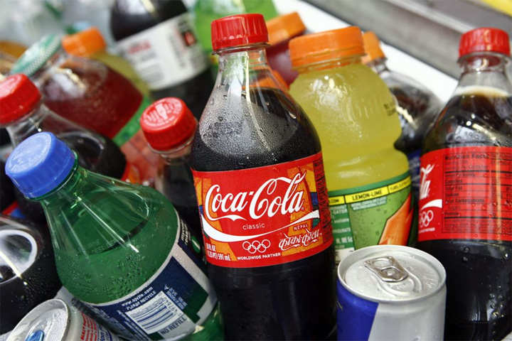

Бир гана жаштар эмес, улуу муун баарысы газдалган суусундуктарды ичсе керек. Кээде майрамдык үстөлдүн негизги өзгөчөлүктөрүнүн бири болуп саналат. Ошентсе да, алардын ден соолукка канчалык пайда же зыян экендигин ойлонуп көрдүк бекен?
Ысык аба-ырайында чаңкап турган кезде, эптеп эле суусагандыкты токтотуу үчүн көзгө көрүнгөн эле муздак суусундукту алып иче коёбуз. Бирок, анын курамында кандай заттар бар экендигин жана зыяны менен пайдасын баарыбыз эле биле бербейбиз. Суусундук чыгаруучулар көпчүлүк учурда, ден- соолукка пайдалуу жагын эмес, өтүмдүү болушу үчүн пайда жагын көздөшөт. Суусундуктарга кум шекер, ар кандай түс берүүчү каражаттар кошулат.
Кум шекерди газдалган жана табигый суусундуктарга даамынын таттуу болушу үчүн кошушат. Мында, орточо эсеп менен 1 стакан сууга 3- 5 чай кашык кумшекер кошулат. Аба- ырайынын ысык күндөрү суусундук стакандап эмес бөтөлкөлөп ичилет эмеспи. Жыйынтыгында кант диабетине жана ашыкча салмактуулукка кабылабыз. Ошондой эле, муздак ичкенде тишке жарака кетет, курт түшөт жана мунун натыйжасында унутчаактык, жүрөк-кан тамыр ооруларын пайда кылат.
Азыркы тапта суусундук чыгаруучу ишканалар кум шекердин ордуна аспартам каражатын (Е-951) колдонушат. Бул зат көздүн көрүүсүн начарлатып, аллергияны козгойт.
Консерванттар суусундуктардын узак убакытка сакталуусу үчүн колдонулат. Ал эми, консервант катары лимон кислотасын (Е-330) пайдаланылат. Лимон кислотасы эмалды эритип, тиште кариестин пайда болушуна шарт түзөт. Ошондой эле, ортофосфор кычкылын (Е-338) да кеңири колдонулуп келишет. Бул зат организмден кальцийди ээритип жиберет. Жыйынтыгында сөөк торчолору борпоң болуп, алсызданып жана морт болуп "остеопороз" оорусуна чалдыгышына жол ачат. Ал эми, остеопороз оорусуна кабылган адам майыпка да кабылышы толук ыктымал. Буга байланыштуу газдалган таттуу суусундуктарды айрыкча жаш балдарга такыр бербеш керек. Анткени, алардын сөөктөрү толук калыптанып бүтө элек болгондуктан, зыяны тийет.
Кофеин бардык энергетикалык суусундуктарда, Кока-Кола, Пепси-Коланын курамында болот. Аны көп ичкенде баш оору пайда болуп, нерв торчолору жабыркоого учурайт. Ошондой эле, көмүр кычкыл газы бар суусундуктар ашказанында жарасы барларга, гастрит жана энтерит оорусу менен ооругандарга сунушталбайт. Көмүр кычкылы ашказандын былжыр челин дүүлүктүрүп, ооруну күчөтөт. Мындан сырткары, газдалган суусундуктун курамындагы фосфат адамдын тез картаюусуна жол ачат. Мындан да коркунучтуусу газдалган суусундуктар оорулардын онкологиялык ооруга айланышына түрткү болот. Газдалган суусундуктарды кош бойлуулар, ичегиси ооругандар жана 3 жашка чейинки балдар ичүүгө тыюу салынат.
Биринчи байлык ден-соолук демекчи, ден-соолугуңузга көңүл буруңуз!!!